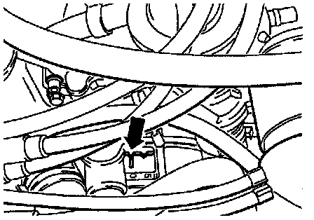

Engine Installed

CAUTION:
- The torque converter has three Cylinder 1 Top Dead Center (TDC) marks (arrow), as the hole pattern for mounting the torque converter allows it to be fitted in three different positions.
- It is absolutely necessary to verify Cylinder 1 TDC by checking piston position through the spark plug hole.
- If necessary, turn the crankshaft by 120° or 240° in direction of engine rotation.